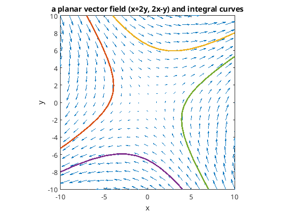

The two-dimensional steady incompressible irrotational fluid flow
In the present page we numerically solve the \(2\times2\) system of ordinary differential equations of the form
\[
\frac{d}{dt}
\begin{bmatrix}
x\\ y
\end{bmatrix}
=
\begin{bmatrix}
x+2y \\ 2x-y
\end{bmatrix}.
\]
The solutions to this system are the integral curves of the planar vector field
\((x+2y,2x-y)\) in the \(xy\)-plane.
In terms of classical mechanics solutions to this system describes
the streamline of the two-dimensional steady incompressible irrotational fluid flow
given by a complex velocity potential
\[
W(z)
=
\frac{(1-2i)z^2}{2},
\quad
z=x+iy.
\]
In this case the streamlines coinside with both streaklines and particle paths
since the flow is steady.
By using MATLAB we draw the vector field amd its integral curves.
See
fluid_flow.m
for the detail.
